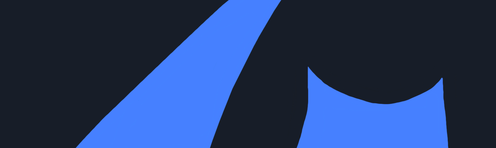
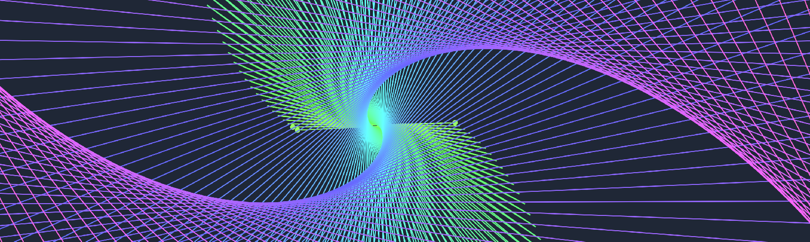

The weekly TODEPOND PONDCAST is for paying supporters only.
Please only listen / read if you've
paid
:)
Welcome back... to another weekly episode... of the
🐸 TODEPOND PONDCAST 🐸
What's new this week?
We got accepted. Dave Ackley and I got accepted for Onward! Essays!, which will take place at SPLASH later this year. We're both really pleased!
The next step is to come up with, and plan, our accompanying talk for the event itself. And that's what we've started doing this week.
I think we can have some fun with the talk, to make it engaging and compelling and uhh— whatever it is. The essay itself is a "dialogue". As in... it's me and Dave having a chat. So the talk itself can also be a dialogue of some sort— at least— It can have one or two fun dialogue sections, probably near the start and the end.
The essay is called "Dialogues on Natural Code", so the talk can be called "Dialogues on Dialogues on Natural Code". I guess it's the same as my usual recursive rubbish.
By the way, Dave spoke a bit about it in his update this week. But note that this video was recorded before we heard the good news.
I mentioned last week that I've been really busy and overwhelmed. So I turned it into a mini video, a tiny bonus episode. Watch it here.
I mean it's mainly a slideshow set to some music that I made in strudel, with some B-roll thrown in for good measure like usual.
I'm happy to get out a small handful of bonus episodes during the droughts between videos. But... I don't know, maybe I shouldn't do them. Maybe I should just focus on the main episodes. I am still working tons on the next video, Top 99 Ways To Make Sand, but I'm not sharing much because there isn't much to share.
All the bonus episodes are unlisted on my channel, although you can find them via my channel's playlists. This is mainly because I don't want them to be recommended to people over my other videos, the main episodes. I guess this is why some people have multiple channels set up. And I originally thought against that because I get various benefits behind having a large(-ish) youtube channel, like control over ads and extra features and so on. But those things really don't count for much. I also know of some "secondary channels" that become bigger and more enjoyed than the "main channel" and I want to avoid investing more time into a smaller channel. I want to make my main episodes. I just need more time. But I will keep pressing on...
I presented the tadi web for the first time, internally at Ink & Switch. The tadi web is my slightly jokey approach to trying to bring together lots of different movements around making computing better. Or rather, it's my attempt to adhere to lots of different "best practices" at the same time, such as local first and robust-first and perma-computing and everything else.
It's been unclear at times whether the tadi web is real, or just a joke. So this was perhaps a clarifying moment. Maybe it can be both.
Anyway, I've continued to explore the practice of the tadi web, which currently means building things in a radically simple way. It's what allowed me to finish off arroost, and it's how my website is made. And I've continued adding experiments to the lab, such as this recent one. Click and drag to try it out.
I'd like to continue working on this tadi web project. I think it raises some interesting questions and possibilities. But we'll see how that goes.
As you might imagine, I can't do all of this work without you. Thank you so much for supporting me along this long and winding journey. I appreciate every little piece of help you give me, whether that's by paying or by advocating for me around the place. I really do appreciate it more than you can imagine. So thanks for being here. And wherever you are in the world... whatever you're doing... I hope you have a great week. 🐸
Days since tode fell asleep: 582Back to the pondcast.